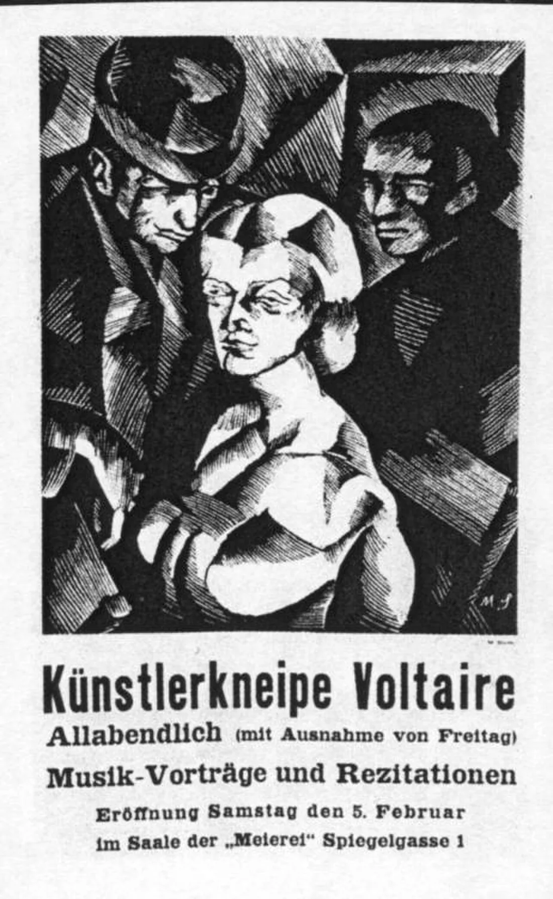

Sessão 09 / O manifesto de uso e o ensaio geral
Regras que escolhemos
Que compromissos conseguimos explicar e cumprir?
Começar
Recupera
De memória, sem abrir o caderno.
De memória
Observação e interpretação: qual é a diferença?
Confirmar
A observação diz o que o público fez ou disse; a interpretação é o que concluímos disso.
Se o público não percebeu, o projeto falhou?
Confirmar
Não. É informação para a defesa e para a versão seguinte.
Que alteração fizeste ao guião depois do ensaio?
Vê
Observa primeiro. Lê depois.
Material 1 de 3: O cartaz do Cabaret Voltaire
O que promete o cartaz, e a quem?

Foi no Cabaret Voltaire que nasceu o dadaísmo, uma resposta de artistas à guerra, com manifestos, máscaras e poemas sonoros.
Material 2 de 3: A fachada da escola, lida como manifesto
Que peça falta à fachada? Que regra do Dogma pode alguém de fora conferir?
A fachada lê-se ao portão da escola.
Material 3 de 3: Uma regra revista
O que mudou na segunda frase?
Decide
Primeiro em silêncio, cada pessoa. Depois em grupo.
Sem ecrã
Primeiro, em silêncio
Escreve uma regra de uso, com verbo e condição, que alguém de fora possa conferir.
Três minutos. Escreve a escolha e uma razão no cartão de decisão. Depois, uma volta: cada pessoa lê o seu cartão, sem comentários.
Depois, em turma
- Juntem as regras repetidas.
- Discutam as que só uma pessoa escreveu.
- Testem cada regra: cumpre-se ou quebra-se? Cortem as que ninguém pode conferir.
No fim, registem a decisão e uma razão que ficou vencida.
Comparar razões
Uma regra com verbo e condição cumpre-se ou quebra-se, e por isso vale. Um manifesto não descreve o que se faz: obriga.
Faz
Em papel ou no ficheiro do grupo.
Em papel
- Ensaio geral cronometrado: afinem as transições.
- Passem o manifesto a versão para assinar. A assinatura é livre e pode levar uma reserva escrita.
- Preparem a defesa em cinco partes (pergunta, fonte, escolha formal, objeção, revisão feita depois do ensaio) e a versão de dois minutos (a regra, o que o público viu, o que custou).
Rever com outra pessoa
Outro grupo faz a pergunta mais difícil à defesa e confere se cada regra do manifesto pode ser verificada.
Quem revê marca uma coisa que se percebe e uma que falta, e faz uma pergunta.
GuardarCasa 9 do mapa do Contra-feed: Defesa e manifesto
A defesa em cinco partes e a versão de dois minutos; as regras propostas ao manifesto.
- 1A regra
- 2O sinal e o custo
- 3As regras da casa
- 4A pergunta e o público
- 5Os meios e os créditos
- 6O caso
- 7Conceito e guião v1
- 8Ensaio e guião v2
- 9Defesa e manifesto
- 10O que o público viu
Leva
Em papel, antes de sair.
Em papel
Em papel, antes de sair
Numa frase: que regra do manifesto vais cumprir já amanhã, e quem vai reparar?
Confirma
- O verbo é concreto.
- Dizes quando.
- Dizes quem pode verificar.
O registo fica neste aparelho.